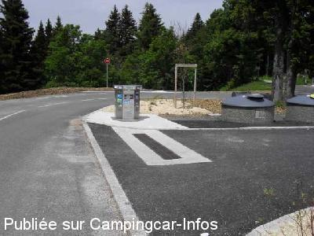
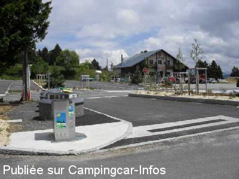
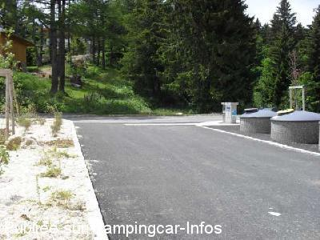
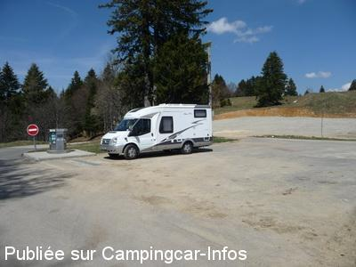
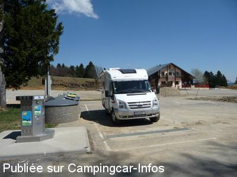

ASN = Aire de services avec stationnement nuit possible de :
PUGNY CHATENOD Le Revard
(N° 399)
Accès/adresse :
Lieu-dit Le Revard
73100 PUGNY-CHATENOD
73100 PUGNY-CHATENOD
Latitude : (Nord) 45.68397° Décimaux ou 45° 41′ 2′′
Longitude : (Est) 5.97871° Décimaux ou 5° 58′ 43′′
Tarif : 2011
Stationnement gratuit
Services 2 €
carte bancaire avec puce uniquement
Type de borne : AIRESERVICES
Services :


Conteneurs de tri sélectif.
Autres informations :
Aire goudronnée,
Dalle de béton pour la vidange des eaux usées, à 1512 m d'altitude.
http://www.savoiegrandrevard.com Autres parkings possibles : près du foyer de ski de fond, à Saint François de Sales...

Le 22/06/2011 par GUS & MARCO 38

Le 22/06/2011 par GUS & MARCO 38

Le 22/06/2011 par GUS & MARCO 38

Le 30/04/2010 par Xtian74

Le 30/04/2010 par Xtian74
de
Xtian74
le 29/04/2010 :
Coordonnées contrôlées et rectifiées. Des travaux sont en cours sur le parking à côté du restaurant Le Trappeur, parking non utilisable pour quelque temps. La borne est une 'AireServices' et non 'Flot Bleu' avec services payables uniquement par carte bancaire à puce! §
Coordonnées contrôlées et rectifiées. Des travaux sont en cours sur le parking à côté du restaurant Le Trappeur, parking non utilisable pour quelque temps. La borne est une 'AireServices' et non 'Flot Bleu' avec services payables uniquement par carte bancaire à puce! §
de
Michel N
le 21/06/2009 :
Il est à préciser que 300 M avant l'arrivée au sommet au niveau du parking restaurant "Le Trappeur", une borne ravitaillement et vidange a été installée. 2 € eau propre, électricité (c'est récent)§
Il est à préciser que 300 M avant l'arrivée au sommet au niveau du parking restaurant "Le Trappeur", une borne ravitaillement et vidange a été installée. 2 € eau propre, électricité (c'est récent)§